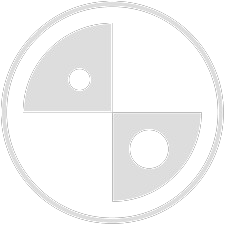

<header class="site-header">
  <nav class="navbar navbar-expand-lg">
    <div class="container-fluid px-4">

      <!-- Logo: niente width/height fissi, solo altezza max per non stirarlo -->
      <a class="navbar-brand" href="index.php">
        
      </a>

      <!-- Toggler mobile -->
      <button class="navbar-toggler" type="button"
              data-bs-toggle="collapse" data-bs-target="#navbarNav"
              aria-controls="navbarNav" aria-expanded="false" aria-label="Toggle navigation">
        <i class="bi bi-list" style="font-size:1.6rem; color:#0d2c3e;"></i>
      </button>

      <!-- Voci menu: ms-auto le spinge a destra -->
      <div class="collapse navbar-collapse" id="navbarNav">
        <ul class="navbar-nav ms-auto">
          <li class="nav-item"><a class="nav-link active" aria-current="page" href="index.php">Home</a></li>
          <li class="nav-item"><a class="nav-link" href="progetti.php">Progetti</a></li>
          <li class="nav-item"><a class="nav-link" href="ambiti.php">Ambiti</a></li>
          <li class="nav-item"><a class="nav-link" href="orientati.php">Orientati</a></li>
          <li class="nav-item"><a class="nav-link" href="eventi.php">Eventi</a></li>
          <li class="nav-item"><a class="nav-link" href="docenti.php">Area Docenti</a></li>
          <li class="nav-item"><a class="nav-link" href="studenti.php">Area Studenti</a></li>
          <li class="nav-item"><a class="nav-link" href="link.php">Link Utili</a></li>
        </ul>
      </div>

    </div>
  </nav>
</header>
